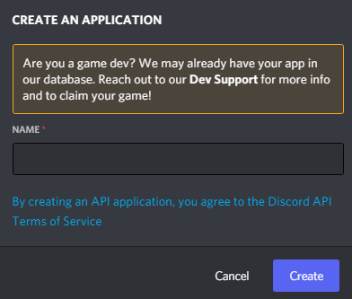

建立機器人帳號¶
為了使用此程式庫以及 Discord API，我們必須先建立一個 Discord 機器人帳號。
建立機器人帳號是一個相當簡單的流程。
請確保您已登入 Discord 網站。
前往 應用程式頁面
點擊「New Application」按鈕。

為應用程式命名，然後點擊「Create」。

前往「Bot」分頁進行設定。
如果您希望其他人能邀請您的機器人，請確保已勾選 Public Bot。
您也應該確保 Require OAuth2 Code Grant 未被勾選，除非您正在開發需要此功能的服務。如果不確定，請**保持未勾選**。

使用「Copy」按鈕複製 token。
這不是 General Information 頁面中的 Client Secret。
警告
請注意，這個 token 基本上就是您機器人的密碼。您**絕對不應**與他人分享。一旦洩漏，他人可以登入您的機器人並進行惡意操作，例如離開伺服器、封鎖伺服器中的所有成員，或惡意 @everyone。
可能造成的後果不勝枚舉，因此**請勿分享此 token。**
如果您不小心洩漏了 token，請盡快點擊「Regenerate」按鈕。這將撤銷您的舊 token 並重新產生新的 token。之後您需要使用新的 token 來登入。
這樣就完成了。您現在擁有一個機器人帳號，可以使用該 token 登入。
邀請您的機器人¶
您已經建立了機器人使用者，但它實際上還沒有加入任何伺服器。
如果您想邀請您的機器人，必須為它建立一個邀請網址。
請確保您已登入 Discord 網站。
前往 應用程式頁面
點擊您機器人的頁面。
前往「OAuth2 > URL Generator」分頁。

在「scopes」下方勾選「bot」核取方塊。

在「Bot Permissions」下方勾選機器人運作所需的權限。
請注意要求機器人擁有「Administrator」權限所帶來的後果。
當機器人被加入到已啟用全伺服器 2FA 的伺服器時，機器人擁有者必須啟用 2FA 才能執行某些操作和權限。請查看 2FA 支援頁面 以獲取更多資訊。

現在產生的網址可以用來將您的機器人加入伺服器。將網址複製並貼到瀏覽器中，選擇要邀請機器人的伺服器，然後點擊「Authorize」。
備註
新增機器人的人需要擁有「Manage Server」權限才能執行此操作。
如果您想要在機器人執行期間使用 discord.Permissions 介面動態產生此網址，可以使用 discord.utils.oauth_url()。